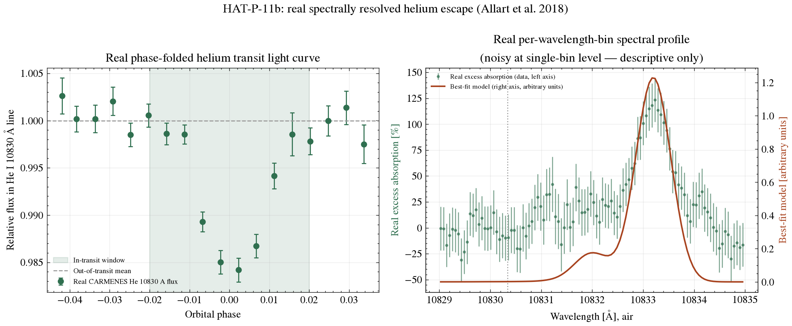

Exoplanet Atmosphere Report · CARMENES, He I 10830 Å
A warm Neptune around an active K-dwarf, with a spectrally resolved detection of escaping helium gas in its published record. This page works from Allart et al.'s (2018) CARMENES data directly and compares its own measurement to the one they published, rather than presenting the two as interchangeable.
Queried live from the NASA Exoplanet Archive TAP service (pscomppars).
| Radius | 4.36 Earth radii — a "warm Neptune" |
|---|---|
| Mass | 25.0 Earth masses |
| Bulk density | ~1.4 g/cm³ — a gas/ice-rich envelope, not rocky |
| Orbital period | 4.888 days |
| Semi-major axis | 0.0526 AU |
| Equilibrium temperature | 838 K |
| Host star | HAT-P-11, K4 dwarf, Teff = 4653 K, 0.683 Rsun, 0.811 Msun — a magnetically active star |
| Distance | 37.76 parsecs (~123 light-years) |
| Discovery | 2009, transit photometry (HATNet); one of the first "warm Neptunes" known |
The metastable helium triplet near 10830 Å (infrared) is populated in the extended, heated upper atmospheres of close-in exoplanets exposed to strong stellar UV/X-ray flux. Unlike hydrogen Lyman-alpha, this line is observable from the ground and is not scattered/absorbed by the interstellar medium, making it a clean tracer of atmospheric outflow. If a planet's upper atmosphere is escaping into a comet-like tail of neutral helium, that gas absorbs a small amount of extra starlight specifically during transit, at exactly this wavelength — deeper and longer than the planet's solid transit alone.
Allart et al. (2018) used this technique to make the first spectrally resolved detection of helium escape from an exoplanet, observing HAT-P-11b with the CARMENES spectrograph on the 3.5 m telescope at Calar Alto across two transits. The figures below work directly from their published data files.
The left panel shows the phase-folded flux inside the He I 10830 Å line across both transit nights; the right panel shows the per-wavelength-bin excess absorption across the triplet with the best-fit model from the original paper overlaid.

scripts/analyze_spectrum.py.Averaging the in-transit points against the out-of-transit baseline gives a flux decrement of 0.827% ± 0.064%, a band signal-to-noise of about 12.9 under this simple weighted-mean treatment, which assumes each phase-folded point is independent. Allart et al. (2018) measured 1.08% ± 0.05% for the same feature from a transit-model fit over a fixed 0.75 Å passband (0.82% ± 0.09% and 1.21% ± 0.06% on the two individual nights). The two numbers are close but come from different estimators — theirs models the transit shape directly, this one compares means either side of a phase cut — so they aren't interchangeable. Both point the same way: absorption in the helium line extends well past the planet's transit depth in the continuum, consistent with gas escaping the upper atmosphere.
System parameters come from the NASA Exoplanet Archive TAP service. The helium light curve and line-profile data are from Zenodo record 1473463 (Allart et al. 2018) — see data/ for the files as downloaded and scripts/analyze_spectrum.py for the analysis (python scripts/analyze_spectrum.py to rerun it). The line-profile panel combines only two transit nights per wavelength bin, so it's noisy at that resolution — bin-level errors run above 7% — which is why the headline number comes from the higher-cadence phase-folded light curve instead, with the line profile shown for context. The 12.9σ figure describes this notebook's own weighted-mean estimator, not a trial-corrected or covariance-aware significance calculation.